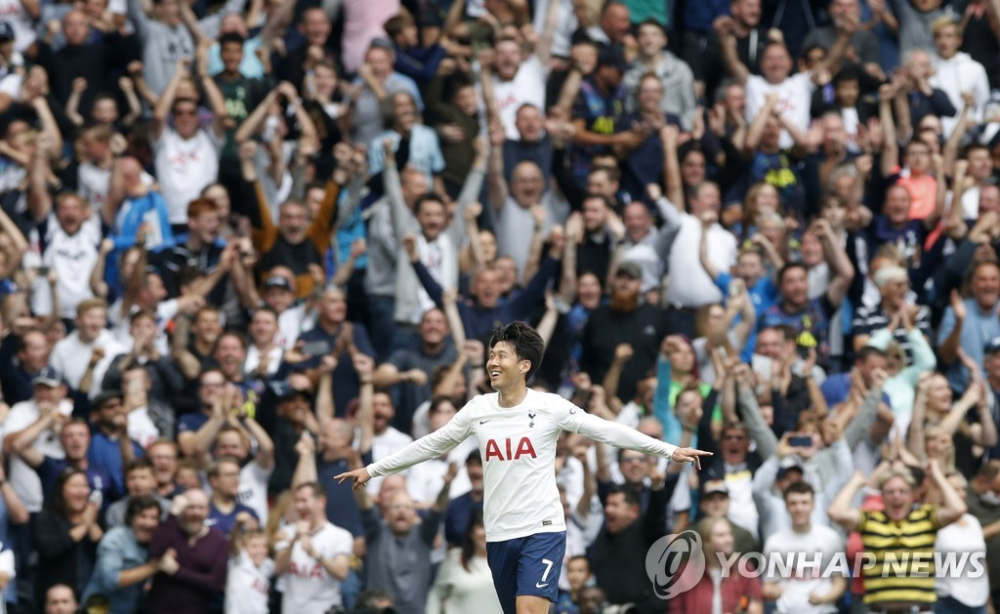

Son Heung-min (29, Tottenham) scored his second goal of the 2021-2022 season in his 200th career Premier League (EPL) game, leading the team's opening three consecutive wins and leap forward.
Son Heung-min started in the third round of the 2021-2022 EPL home game against Watford at Tottenham Hotspur Stadium in London on the 29th and scored the only goal of the game with a free kick in the 42nd minute of the first half.
This is Son Heung-min's second goal of the season following the winning goal in the first round of the EPL against Manchester City on the 16th.
Son Heung-min scored his second goal of the season in 200 games in the EPL...Tottenham's opening three consecutive wins.